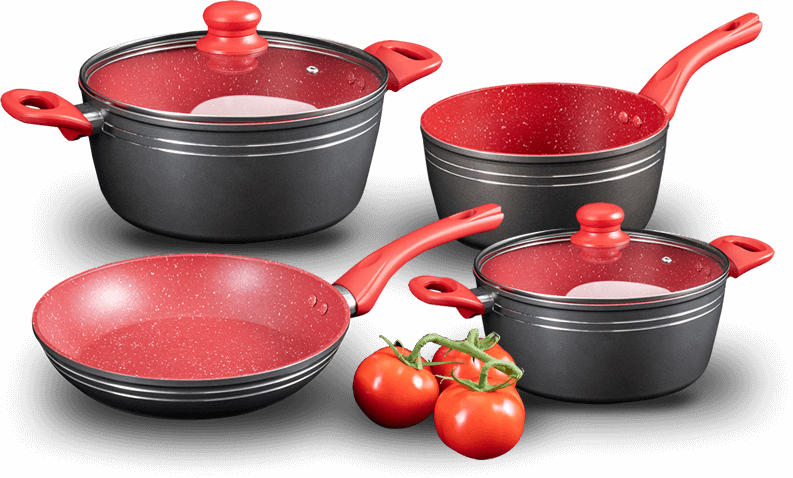

A Origem das Panelas de Ferro: História, Evolução e Por Que Elas Ainda São Tão Populares
As panelas de ferro fazem parte da história da culinária mundial há milhares de anos. Mesmo com o surgimento de novos materiais como alumínio, teflon e aço inox, elas continuam sendo consideradas um dos utensílios mais duráveis e eficientes para cozinhar.
Mas afinal, de onde surgiram as panelas de ferro e por que elas continuam tão valorizadas até hoje?
Neste artigo você vai descobrir:
-
A origem das panelas de ferro
-
Como elas evoluíram ao longo da história
-
Por que foram tão importantes nas cozinhas antigas
-
Por que voltaram a ser tendência na culinária moderna
A Origem das Panelas de Ferro na Antiguidade
O uso do ferro na fabricação de utensílios domésticos começou há milhares de anos. Estima-se que os primeiros registros de utensílios de ferro utilizados na culinária datem de aproximadamente 2500 a.C.
Civilizações antigas perceberam que o ferro possuía propriedades ideais para o preparo de alimentos.
Principais características que chamaram atenção:
-
Alta resistência ao calor
-
Grande durabilidade
-
Capacidade de aquecimento uniforme
-
Material abundante na natureza
Os egípcios estão entre os primeiros povos a utilizar o ferro na produção de utensílios domésticos, incluindo panelas primitivas.
Naquela época, porém, o processo de fabricação era muito rudimentar, o que resultava em utensílios mais pesados e com acabamento simples.
A Evolução das Panelas de Ferro ao Longo da História
A história das panelas de ferro acompanha a evolução das técnicas de metalurgia e fundição. Ao longo dos séculos, a forma de produzir essas panelas foi sendo aprimorada.
Linha do tempo da evolução das panelas de ferro
| Período | Evolução |
|---|---|
| Antiguidade (2500 a.C.) | Primeiros utensílios de ferro utilizados na culinária |
| Idade Média | Popularização das panelas em fogueiras e lareiras |
| Século XVIII | Aperfeiçoamento da fundição e início da produção em maior escala |
| Século XIX | Popularização mundial das panelas de ferro fundido |
| Século XX | Declínio com o surgimento de novos materiais |
| Século XXI | Retorno das panelas de ferro na culinária moderna |
Panelas de Ferro na Idade Média
Durante a Idade Média (séculos V ao XV), as panelas de ferro tornaram-se extremamente comuns nas cozinhas europeias.
Naquela época:
-
A maioria das casas possuía fogueiras abertas
-
Os utensílios eram suspensos sobre o fogo
-
As panelas eram consideradas objetos de grande valor
Era comum que panelas de ferro fossem passadas de geração em geração, devido à sua enorme durabilidade.
Algumas famílias utilizavam a mesma panela por décadas ou até séculos.
O Avanço da Fundição no Século XVIII
O século XVIII marcou uma grande transformação na produção de utensílios de ferro.
Com o avanço das técnicas de fundição, tornou-se possível:
-
Produzir panelas com acabamento mais uniforme
-
Reduzir imperfeições na superfície
-
Aumentar a escala de produção
Isso fez com que as panelas de ferro se tornassem acessíveis para mais pessoas, especialmente em áreas rurais e fazendas.
Nesse período, elas passaram a ser utilizadas para preparar alimentos como:
-
Ensopados
-
Carnes
-
Pães
-
Sopas
-
Cozidos
O Auge das Panelas de Ferro no Século XIX
Durante o século XIX, principalmente na América do Norte, as panelas de ferro fundido atingiram seu auge.
Diversas empresas começaram a produzir utensílios de alta qualidade, como:
-
frigideiras
-
panelas
-
caldeirões
-
chapas
Esses utensílios eram extremamente valorizados por cozinheiros e famílias.
Motivos da popularidade
-
Distribuição uniforme do calor
-
Resistência extrema
-
Capacidade de cozinhar grandes quantidades
-
Longa vida útil
Era comum que uma panela de ferro durasse várias gerações dentro da mesma família.
O Declínio no Século XX
No século XX surgiram novos materiais que começaram a dominar o mercado de utensílios domésticos:
-
Alumínio
-
Aço inoxidável
-
Panelas antiaderentes
Esses novos materiais ofereciam vantagens como:
-
Menor peso
-
Preço mais baixo
-
Menos necessidade de manutenção
Por isso, muitas pessoas passaram a substituir suas antigas panelas de ferro.
Mesmo assim, elas nunca desapareceram completamente, pois muitos cozinheiros continuaram valorizando suas características únicas.
O Renascimento das Panelas de Ferro no Século XXI
Nos últimos anos, as panelas de ferro voltaram a ganhar destaque na culinária moderna.
Esse movimento aconteceu por vários motivos:
1. Valorização da culinária tradicional
Muitas pessoas passaram a buscar métodos de preparo mais tradicionais.
2. Cozinha mais saudável
O ferro pode liberar pequenas quantidades do mineral nos alimentos durante o preparo.
3. Durabilidade
Uma panela de ferro bem cuidada pode durar décadas ou até séculos.
4. Melhor sabor dos alimentos
Muitos chefs afirmam que o ferro ajuda a desenvolver sabores mais intensos nos pratos.
Principais Vantagens das Panelas de Ferro
As panelas de ferro possuem características que poucos utensílios conseguem oferecer.
Benefícios principais
-
Distribuição uniforme do calor
-
Alta retenção de temperatura
-
Grande durabilidade
-
Ideal para cozimentos lentos
-
Pode ir ao forno
-
Não possui revestimentos químicos
Comparação entre Panelas de Ferro e Outros Materiais
| Tipo de panela | Durabilidade | Distribuição de calor | Peso | Manutenção |
|---|---|---|---|---|
| Ferro fundido | Muito alta | Excelente | Pesado | Média |
| Alumínio | Média | Boa | Leve | Baixa |
| Aço inox | Alta | Média | Médio | Baixa |
| Antiaderente | Baixa | Média | Leve | Baixa |
O Consumo de Panelas de Ferro no Mundo
Atualmente, o consumo de panelas de ferro é maior em países que valorizam culinária tradicional e utensílios duráveis.
Distribuição aproximada de consumo mundial
| Região | Consumo aproximado |
|---|---|
| América do Norte | Alto |
| Europa | Alto |
| Ásia | Alto |
| América do Sul | Baixo |
| África | Baixo |
| Oriente Médio | Baixo |
Isso acontece porque em muitos países desenvolvidos existe maior preocupação com:
-
qualidade do preparo dos alimentos
-
utensílios duráveis
-
alimentação saudável
Curiosidades Sobre as Panelas de Ferro
Algumas curiosidades interessantes sobre esse utensílio tão antigo:
-
Uma panela de ferro pode durar mais de 100 anos
-
Muitos chefs profissionais preferem ferro fundido para grelhar carnes
-
Panelas antigas são frequentemente consideradas itens de coleção
-
O ferro melhora o processo de caramelização dos alimentos
Conclusão
A história das panelas de ferro é uma verdadeira prova de como um utensílio simples pode atravessar séculos e continuar relevante.
Desde as civilizações antigas até as cozinhas modernas, elas permaneceram presentes graças a características únicas como:
-
resistência
-
versatilidade
-
capacidade de melhorar o preparo dos alimentos
Hoje, com a valorização da culinária artesanal e saudável, as panelas de ferro voltaram a ocupar um lugar de destaque nas cozinhas de todo o mundo.